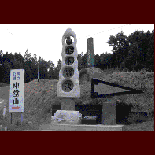

東堂山昭和羅漢/福島県小野町

小野小町とリカちゃんの里、福島県小野町。その町のシンボル、標高659�Eの東堂山の山中にヘンな羅漢がいると聞き付け早速行ってみることにした。
盤越自動車道の小野インターを下りるといきなり看板に出くわす。右に行けばリカちゃんキャッスル、左に行けば昭和羅漢。凄い選択肢である。勿論左折する。
で、田舎道をウネウネと登っていくと東堂山に至るのだが、突然気の触れたような石のオブジェ風ロードサインが現れる。東堂山満福寺の入り口である。
駐車場に車を停めるともうそこには既に何体かの石像羅漢がいる。境内に置くには余りにも恥ずかしかったのだろう、イロモノ羅漢が並んでいる。なかでも農協が奉納した「豊年羅漢」なるモノは米俵を肩に担いだ情けない姿。
仁王門を潜り階段を登っていくと、不思議な空間に出る。山中にある割には開けた平地に100年以上前に建てられた本堂、鐘楼などが並んでいる。勿論人などおらず、まるで時間が止まってしまったかのような厳かな雰囲気だ。
しかしその本堂の奥に回り込むと、そんな雰囲気が一気にメルトダウンする。昭和羅漢である。
ここの羅漢はその名の通り昭和の羅漢像で、古いものでも精々20年位のモノなのだろう。岩肌に彫られた大日如来の前に約300体近くが座している。マトモなものもあるのだがやっぱり奇妙なものの方が目立つ。
ムンクの「叫び」羅漢、変な顔の付いた玉に押しつぶされる羅漢、ゲロ吐き羅漢など。中には永六助そっくりの「六八九羅漢」なるものもあったが中村八大と坂本九は似てなかったです。一応三人で上を向いていたけど。
ミッキーマウスの帽子をかぶったディズニ－ランド帰り羅漢なんかは大友克洋の「童夢」みたいでかえって怖かったぞ。
その他、なぜか安達が原の鬼女や兵隊さんの格好をした子供の像まで、もはや羅漢様の定義も威厳もお構いなしだ。
ハッキリ言ってここは羅漢の無法地帯である。
1998.3.
珍寺大道場 HOME